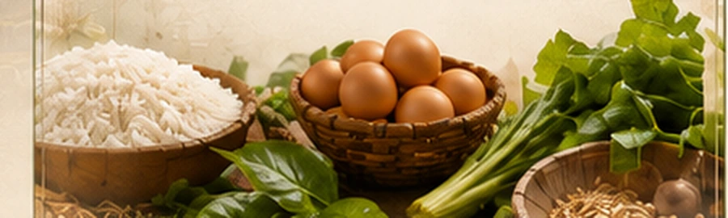

Beras
Produk beras dan biji-bijian sesuai data aktif.
Lini untuk hasil pertanian, peternakan, dan produk primer sesuai kesiapan produk.

AYA Farm berfokus pada hasil pertanian, peternakan, dan produk primer. Halaman ini menjelaskan fungsi lini; status ketersediaan setiap produk tetap mengikuti data katalog yang aktif.
Produk beras dan biji-bijian sesuai data aktif.
Hasil bumi yang masuk ke lini Farm sesuai kesiapan produk.
Produk primer peternakan bila sudah tersedia dan terverifikasi.
Bahan dasar yang belum masuk kategori olahan Spice atau Snacks.
Beras Pilihan menjadi featured product AYA Farm sebagai representasi kebutuhan pokok dari lini yang berangkat dari hasil bumi.